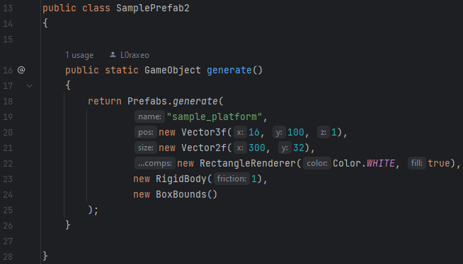

Prefabs
Overview
Prefabricated game objects allow you to create a blueprint for instantiating your game objects without actually instantiating it. Thus, you can create game objects with one simple line of code. The static prefabs class has two static methods for generating game objects. Their parameters pass in attributes for the game object including its name, position, size, rotation, and components. However, it’s not recommended that you generate game objects through the prefabs class directly. Instead, create your own static prefabs class in order to create your own blueprint for an object.
Creating Prefabs
Example 1:

Example 2:
Instantiating Prefabs
Example 1 (in the scene class):
addGameObject(SamplePrefab1.generate());
Example 2 (in the scene class):
addGameObject(SamplePrefab2.generate());